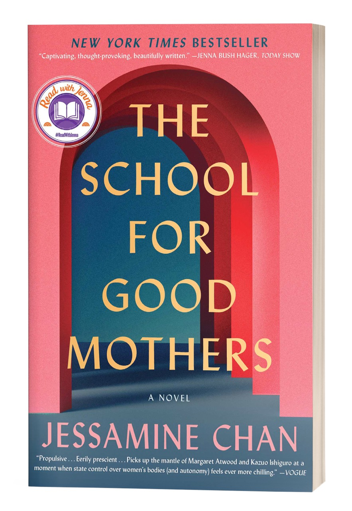

How did you come up with the idea for The School for Good Mothers?
When I began this project in early 2014, I was in my mid-30s and consumed with anxiety about whether to have a baby with my now-husband. We didn’t feel ready in any way, but the biological clock pressure was very real. In the midst of wrestling with my ambivalence, I happened to read the article “Where Is Your Mother?” by Rachel Aviv (The New Yorker, November 2013) which, in brief, is about a mother fighting to regain custody of her son after leaving him home alone and her nightmarish experience with the family court system. The clinical language used by Child Protective Services, and the keen sense of injustice I felt on that mother’s behalf, lodged in my memory, and really, in my soul. The tone with which the official figures in that story talked about parenting felt almost like science fiction, a one-size-fits-all approach that privileged upper-middle-class American ideals and allowed no room for differences in culture or personality or mistakes. A few months later, through however the subconscious fuses with imagination, I developed the idea for the school, fueled by this creative spark and all the ruminating I was already doing on the subject of motherhood.
What was it like pitching your first book?
Luckily, the actual pitching of my book was done by my phenomenal agent, Meredith Kaffel Simonoff, but the conversations I had with interested editors will stay with me all my life. In many ways, those conversations were a dream come true even before my book was published. I’d been writing fiction for over two decades by that point, and sharing a project that had been my secret world for so long was thrilling and terrifying. You do have to switch from writer to author once you get to the point of selling your book and have to develop the ability to speak lucidly about your work, process, and goals. I was so lucky to land with Dawn Davis at 37 Ink, who instantly understood who I am as an artist and thinker, and whose vision helped me realize the book’s potential.
Why do you think the book resonated with so many people and became a bestseller?
While I take great pride in the book I wrote, the fact that I debuted on the NYT list is very much thanks to the hard work of my team at Simon & Schuster and being chosen for the Read with Jenna/TODAY Show Book Club by fairy godmother Jenna Bush Hager. The media coverage, reviews, all the support from Bookstagram and BookTok, and book clubs played a big part too. This was a rare experience, and I am so lucky. As for why the book resonates with people, I think there are many ways into this story, even for younger readers and readers who are not parents. My agent Meredith put it best. She said: Frida is a character driven by love. I think people are responding to the yearning. Frida is really vulnerable and flawed. She yearns to belong. Frida is also a daughter, and there’s a first-generation Chinese-American immigrant story threaded throughout. Frida is in many ways the messy Asian-American heroine I always wanted to read.
Now that the book has been out for four years, I’ve found that there are new readers who’ve been seeking out the book for its political dimension, since we’re now living in a dystopian world and the book speaks to our current moment more than I could have even intended.
How did you first become interested in writing?
I’ve been a major reader since early childhood, but I didn’t start writing fiction until the spring semester of my freshman year at Brown University in 1997, when I took a beginning fiction workshop with Jane Unrue, the teacher who truly changed my life. I only took that workshop because I wanted to be a book editor one day. It never occurred to me to try to be an author, but after that first class, I couldn’t imagine pursuing any other path. This was a different world when there were very few prominent Asian-American authors, so it seemed truly impossible to write books myself. I’m really glad the new generation of writers is coming of age at a time when the literary fiction landscape is much more diverse.
What do you find most challenging as a writer?
Technically, I find most aspects of writing challenging but clearing out mental and emotional space to come up with ideas has been the biggest challenge since publication. This is likely also a logistical issue because my other full-time job is parenting my 9-year-old daughter, so my consciousness and my schedule isn’t entirely my own anymore. Like everyone else, I’m also trying to develop better habits around technology, and lately I’ve been telling every single person to buy a BRICK!
Why did you decide to go to Ragdale?
I had the great fortune of being admitted to Ragdale for the first time back in 2007 when I was 29. I really benefitted from the blind admissions policy because I had no publications whatsoever at that point and nothing to list in terms of artistic accomplishments. Ragdale is the first arts organization that took a chance on me and has been integral to my creative life. Those five weeks introduced me to an incredible group of artists and helped me truly believe that this writing life was possible.
How did Ragdale help foster your writing and editing skills?
I’ve been so lucky to have been a resident at Ragdale four times between 2007 and 2025, at very different stages of my life and career. In a lot of ways, I feel like I’ve grown up there. What Ragdale provides is a space to dream. It’s not just the community of artists, the time, the beautiful grounds, Linda’s glorious meals, the workspaces, and the prairie, but something magical in the air. It’s always felt like stepping into a different world. It’s a place where I feel completely free and can focus on the pure act of creation, where it feels more possible to believe.

It is rare to write books in longhand these days. Why do you prefer it?
It’s both rare and a little bit crazy to work this way, since it takes so much longer. For me, writing longhand helps me feel free to say anything, to take big risks and make mistakes. I’m always searching for a childlike sense of joy and wonder. I think one of my writing teachers once referred to this as staying innocent before the page. Before this, I worked for over a decade as an editor, so when faced with words on a screen, I just want to make every sentence perfect, which isn’t helpful for drafting fiction since there’s no way to move forward. With just pen and notebook, I feel free to write my messy drafts. Working longhand is also a great way for anyone to get over tendencies toward perfectionism, to deal with writer’s block, and these days, it’s a way to simply avoid the distractions of email/the Internet.
Who is one of your favorite authors and why?
I have so many favorite authors, but my most recent favorite is Susan Choi. I’m so late to the game with reading her books, but I’m catching up! I absolutely adored My Education and just finished Trust Exercise. Her prose is so spectacular, intricate, and surprising, and her work reaches such a thrilling fever pitch of feeling. Most of all, her books make me want to write and to push myself to improve my craft.
What are you working on next?
I am currently working on a new novel that I started during a residency at Ragdale in the summer of 2022. I’m keeping details under wraps for now, but I can share that it’s about marriage.
This was first published in Lake Forest Love.